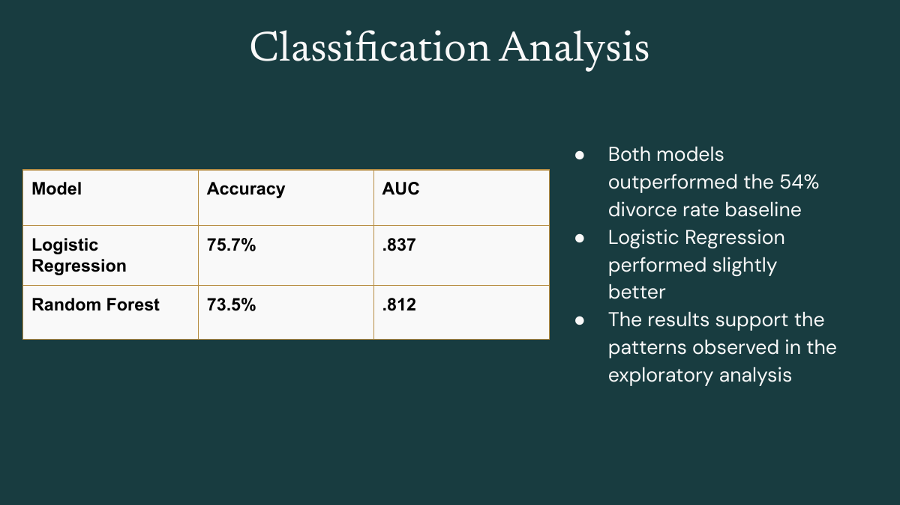

Research question
Which demographic, financial, and relationship factors are associated with divorce, and can those characteristics be used to predict marriage outcomes?

Data & analysis
The dataset contained 45,000 records and 24 variables spanning age, education, income, financial stress, children, conflict frequency, shared activities, counseling, and communication behaviors. Exploratory analysis compared divorced and non-divorced couples across these dimensions before moving into classification.
Modeling
We evaluated Logistic Regression and Random Forest classifiers. During feature review, outcome-linked fields such as years to divorce were excluded to prevent target leakage and keep the evaluation defensible.
Logistic Regression achieved 75.7% accuracy and 0.837 AUC, outperforming Random Forest at 73.5% accuracy and 0.812 AUC.
Findings
Relationship behaviors were more informative than most demographic characteristics. Contempt had the strongest positive correlation with divorce and ranked as the most important Random Forest feature. Repair-attempt success and positive-to-negative interaction ratio were among the strongest negative associations.
The analysis identified associations, not causal effects; the project explicitly avoided interpreting individual variables as proof of what causes or prevents divorce.